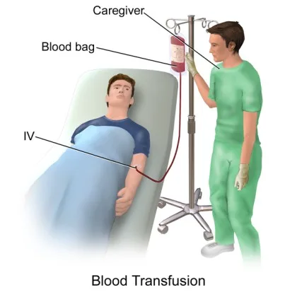

Expanded Nursing Uganda Explanation
Blood transfusion should be understood beyond a short definition. Link the concept to patient history, focused assessment, common risks, nursing priorities, documentation and evaluation of outcomes.
01 BLOOD TRANSFUSION
Blood transfusion refers to the intravenous replacement of lost or destroyed blood with compatible human blood.
02 TYPES OF BLOOD PRODUCTS
1. Whole Blood : Whole blood is indicated to the patient experiencing acute massive loss or hypovolemic shock. Whole blood restores volume and raises hemoglobin count and therefore oxygen capacity.
- Indication : Acute massive blood loss (e.g., trauma) or hypovolemic shock.
- Purpose : Replenishes blood volume, increases hemoglobin count (carrying oxygen), and improves oxygen-carrying capacity.
2. Packed Red Blood Cells (PRBCs) : Red blood cells are separated from a unit of whole blood. 80% of plasma is removed leaving packed red blood cells which may be transfused to a patient to increase the number of red blood cells without overloading the circulatory system with fluids. Certain types of anaemia such as aplastic anaemia may be treated by this blood product.
- Indication : Anemia (including aplastic anemia)
- Conditions requiring increased oxygen-carrying capacity without excessive fluid volume.
- Purpose: Increases the number of red blood cells to improve oxygen delivery without overloading the circulatory system.
3. Platelet Concentration : Platelets may be administered to aid homeostasis in patients suffering from thrombocytopenia. Platelets assist in initiating the clotting process and other clotting factors such as prothrombin, fibrinogen and thromboplastin.
- Indication : Thrombocytopenia (low platelet count), leading to bleeding disorders.
- Purpose : Provides platelets to aid in hemostasis (stopping bleeding). Platelets initiate the clotting process, working alongside other clotting factors like prothrombin, fibrinogen, and thromboplastin.
4. Plasma : Plasma is the fluid part of blood after centrifuging in order to remove the red blood cells. Plasma is used to expand blood volume in cases of shock, burns, haemorrhage and while waiting for blood to be cross matched.
- Indication :
- Shock (e.g., due to trauma, burns, or hemorrhage).
- While awaiting crossmatched blood for transfusion.
- Purpose : Expands blood volume, providing essential proteins and clotting factors.
03 Indications for Blood Transfusion:
1. Severe Anemia :
- Pregnancy
- Sickle Cell Disease
- Complicated Malaria
2. Preoperative : To address low blood volume levels.
3. Severe Burns : To replace lost fluids and proteins.
4. Postoperative : After major surgeries like:
- Laparotomy (abdominal surgery)
- Open reduction of internal fractures
- Total abdominal hysterectomy
5. Trauma : Following road traffic accidents (RTAs) or other injuries.
6. Blood Clotting Factor Deficiencies : To provide missing clotting factors.
7. Specific Types of Anemia : When other treatment options are inadequate.
Note:
- Blood type matching : It’s important to ensure the blood type of the donor matches the recipient to prevent transfusion reactions.
- Rh factor compatibility : Rh factor is another important blood group factor that needs to be considered.
- Crossmatching : A process to further ensure compatibility between donor and recipient blood.
- Potential risks : Blood transfusions can carry risks, including allergic reactions, infections, and transfusion-related acute lung injury (TRALI).
- Alternatives to blood transfusion : Options like erythropoietin (for anemia) and medications to increase platelet production are sometimes available.
As for intravenous infusion with addition of: –
Top shelf
- Blood giving set with a filter
- Larger needle or cannula
Bottom shelf
- Unit of blood.
- Normal saline.
- Observation chart, fluid balance chart.
- Patients chart with details of transfusion.
- Medicines as prescribed.
Procedure
The technique of transfusion is similar to intravenous infusion.
- On completion of the transfusion the empty bottle must not be washed and should be kept on the ward for 24 hours, in case it is needed for testing in the case of reaction.
- Record the following on the patient’s chart: –
- Date and time of starting and completing the transfusion.
- Number of the blood bottle.
- Amount of blood transfused.
- Names of nurses or doctor who checked the blood and set up the transfusion.
- Patient’s initial response to the transfusion.
- Urinary output
Administer normal saline before and after blood transfusion.
04 Complications of Blood Transfusion
The following are some of the adverse reactions which may occur during blood transfusion:
1. Allergic Reactions :
- Cause : Hypersensitivity to components within the blood product.
- Signs & Symptoms : Itching, flushing, hives (urticaria), respiratory distress, and anaphylactic shock.
- Management :
- Stop the transfusion immediately.
- Notify the doctor urgently.
- Administer antihistamines if prescribed.
2. Febrile Reaction :
- Cause : Antibodies in the recipient’s blood reacting to donor white blood cells.
- Signs & Symptoms : Fever, chills, and headache during transfusion.
- Management :
- Stop the transfusion immediately.
- Inform the doctor.
- Provide symptomatic relief (extra blankets, prescribed antipyretics).
- Reassure the patient.
3. Incompatibility Reaction :
- Cause : Mismatched blood types (e.g., giving type A blood to a type B recipient). This is a serious, potentially life-threatening reaction.
- Signs & Symptoms : Immediate onset of shivering, chills, headache, low back pain, nausea, vomiting, hemoglobinuria (hemoglobin in the urine), and acute renal failure.
- Management :
- Stop the transfusion immediately.
- Notify the doctor.
- Keep the vein open with normal saline.
- Treat shock if present.
- Return the blood unit to the blood bank for rechecking.
- Collect blood samples from the recipient and urine specimen to check for hemoglobinuria.
- Administer diuretics as prescribed.
4. Circulatory Overload :
- Cause : Infusion of blood volume faster than the circulatory system can handle.
- Signs & Symptoms : Distended neck veins, shortness of breath (dyspnea), dry cough, and pulmonary edema.
- Management :
- Stop the transfusion immediately.
- Inform the doctor, who may decide to stop the transfusion completely or slow the infusion rate.
- Administer prescribed medications.
- Monitor and record vital signs frequently.
5. Pyogenic Reaction :
- Cause : Bacterial contamination of the blood product or transfusion equipment.
- Signs & Symptoms : High fever, chills, nausea, and vomiting.
- Management :
- Stop the transfusion immediately.
- Provide tepid sponge baths for fever reduction.
- Inform the doctor and the blood bank.
- Monitor vital signs closely.
- Return the blood unit to the blood bank.
- Administer antibiotics and antipyretics as prescribed.
6. Transmission of Infectious Diseases :
- Cause : Blood products can potentially transmit diseases like malaria, syphilis, viral hepatitis, and HIV/AIDS.
- Prevention : Careful screening of donor blood is essential to minimize this risk.
05 THE ROLES OF A NURSE BEFORE, DURING AND AFTER BLOOD TRANSFUSION
Before Blood Transfusion (Nurse’s Interventions)
- Verify Prescription : Ensure that a blood transfusion has been prescribed by the doctor as indicated in the patient’s file.
- Patient Identification : Properly identify the patient to be transfused.
- Explain Procedure : Explain the procedure to the patient to alleviate anxiety.
- Counsel and Educate : Counsel, reassure, and provide health education to the patient and their relatives about the benefits of the blood transfusion.
- Establish IV Line : Insert a cannula into the identified vein to establish an IV line, maintain it in situ, and obtain a blood sample for laboratory grouping and cross-matching to obtain a compatible donor.
- Collect Blood Pack : Collect the compatible blood pack from the laboratory for the patient to be transfused.
- Inspect Blood Pack :
- Verify the blood group.
- Confirm the patient’s name on the blood pack.
- Check the expiry date.
- Verify the Rh factor.
- Confirm the reference number.
- Check for Leaks and Clots : Inspect the blood pack for leakages and change it if necessary. Check for the color and presence of clots, replacing the pack if clots are present.
- Confirm Infusion Set Integrity : Ensure the infusion set is intact.
- Take Vital Observations : Record vital signs, including BP, TPR, and maintain a temperature chart.
- Patient Positioning : Position the patient’s arm comfortably.
- Warm Blood : Warm the blood to room temperature to prevent chills.
- Connect Blood Pack : Firmly connect the blood pack to the infusion system on the drip stand.
- Fill Air Chamber : Fill the air chamber with a little blood and expel air from the infusion set by running blood through it.
- Administer Prescribed Treatment : Administer any prescribed medications.
During Transfusion
- Note Start Time : Record the time the transfusion begins.
- Monitor Blood Flow Rate : Ensure the blood flow rate is normal.
- Watch for Reactions : Observe the patient for any adverse reactions, stopping the transfusion immediately if they occur.
- Take Vital Observations: Continuously monitor vital signs to ensure the patient remains stable.
- Check Infusion Site : Inspect the infusion site for swelling, leakages, pain, and check the infusion system for blood clotting.
- Disconnect After Transfusion : After successful transfusion, disconnect the transfusion system from the infusion line.
- Record End Time : Document the time the transfusion ends.
- Thank the Patient : Thank the patient for their cooperation.
After Transfusion
- Monitor for Reactions : Continuously monitor the patient for post-transfusion reactions.
- Monitor Vital Signs: Keep a close watch on vital signs and maintain a temperature chart.
- Keep Blood Pack : Retain the empty blood pack at the bedside for 8-12 hours.
Note:
- Administer normal saline before and after the blood transfusion.
- Administer whole blood and packed red blood cells over 4 hours.
- Administer plasma, platelets, and cryoprecipitate over 20 minutes.
06 Nursing Uganda Clinical Lens
Use Blood Transfusion as a practical nursing topic, not only a memorized definition. Prioritize airway, breathing, circulation, pain, asepsis, wound healing and early complication detection.
- What to understand first: define blood transfusion, identify the normal or expected pattern, then explain what changes when the patient is unwell.
- Why it matters in care: the nurse must recognize risk early, explain findings clearly, document accurately and know when to escalate.
- How to revise it: connect each point to assessment, nursing diagnosis or care problem, intervention, rationale and evaluation.
07 Assessment Guide
- Vital signs, pain, bleeding, perfusion, level of consciousness and injury pattern.
- Wound appearance, drainage, odour, swelling, temperature and surrounding skin.
- Fluid balance, mobility, nutrition, surgical site risk and ordered investigations.
08 Nursing Priorities, Rationales and Outcomes
- Stabilize urgent problems first, then prepare for investigations or theatre care.
- Maintain aseptic technique, pain control, wound care and documentation.
- Prevent shock, infection, pressure injury, deep vein thrombosis and delayed healing.
The rationale for these priorities is patient safety: nursing actions should prevent deterioration, reduce discomfort, support recovery and create clear evidence for the next caregiver.
- Expected outcome: The patient remains stable, wound healing progresses, pain is controlled and complications are recognized early.
09 Patient Teaching and Revision Check
- Explain blood transfusion in simple language the patient or caregiver can repeat back.
- Teach warning signs, medicine or follow-up instructions, hygiene or lifestyle points where relevant.
- For exams, prepare a short answer using: definition, causes or risk factors, signs, assessment, management, complications and prevention.
- For ward practice, document baseline findings, actions taken, patient response and the plan for review.
Illustrations and Diagrams (14)



6 more diagrams available, open the lesson for full illustrations.
Related Video Lectures
Watch nursing lecture videos on YouTube for this topic. Opens in a new tab.
Watch on YouTubeExternal link: YouTube may use its own cookies and terms. Nursing Uganda is not affiliated with YouTube.